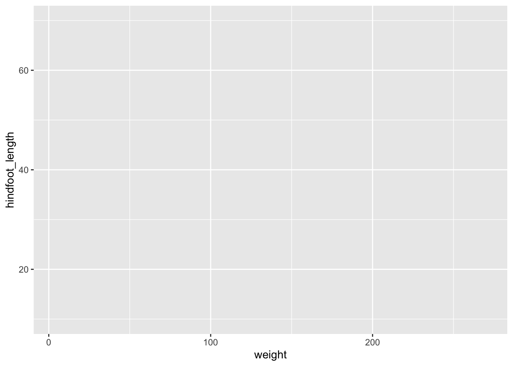
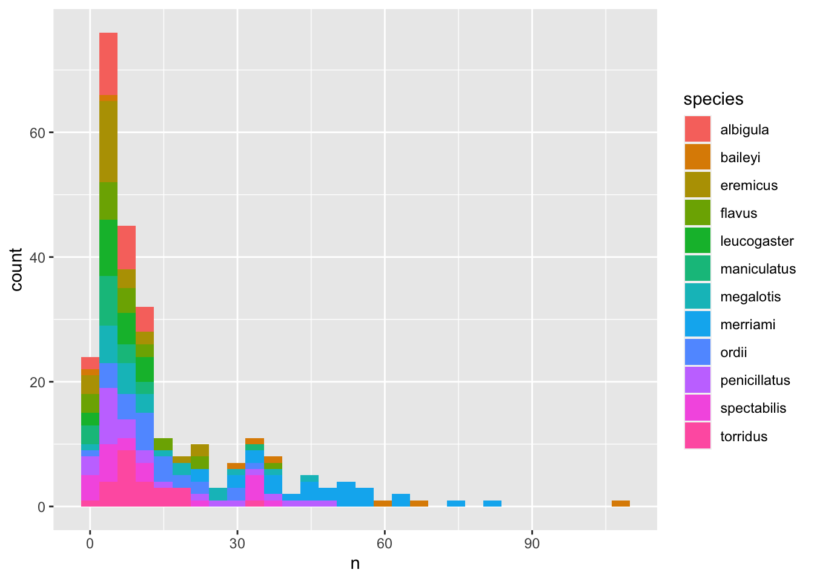
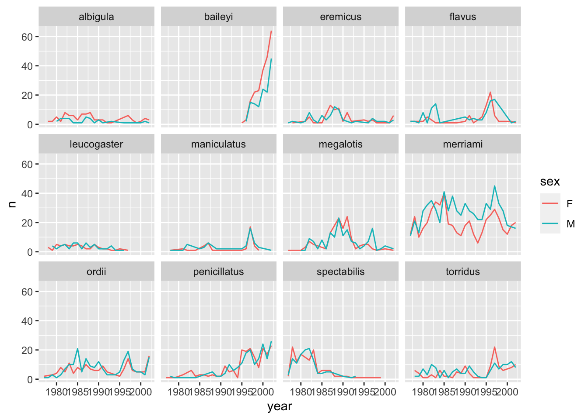
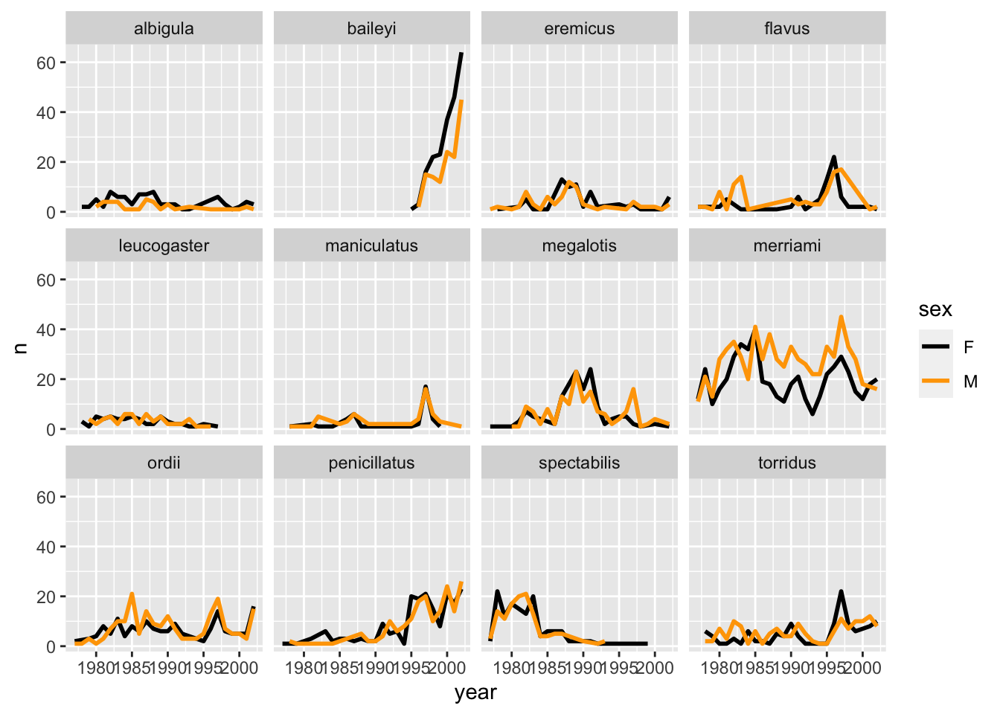
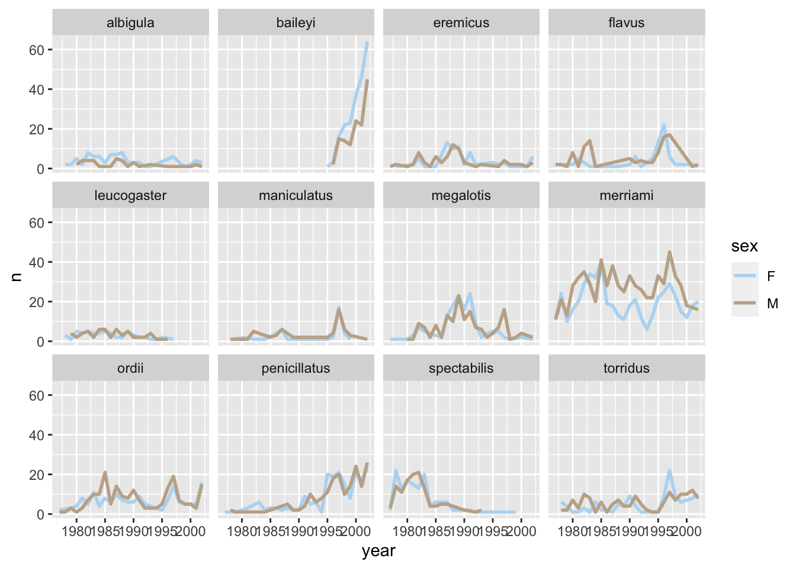
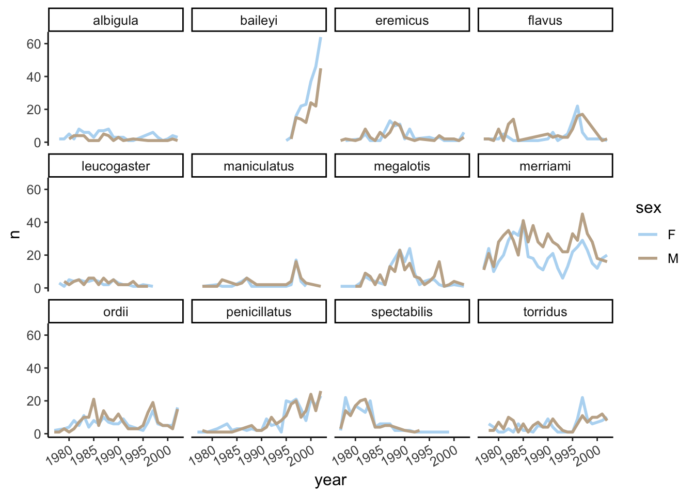

Produce scatter plots, line plots, and histograms using ggplot.
Set universal plot settings.
Understand how to combine dplyr and ggplot.
Understand and apply faceting in ggplot.
7.1.2 Lesson outline
Plotting with ggplot2 (10 mins)
Building plots iteratively (30 mins)
Split-apply-combine… plot! (20 mins)
Faceting (10 mins)
Why plot? (15 mins)
Generalizable plots (15 mins)
Exporting (10 mins)
Now we have seen how to get our dataset in our desired shape and form (aka “tidy”, where every column is a variable, and every row is an observation), we are of course itching to actually see what the data actually looks like. Luckily, our favourite package-of-packages tidyverse got us covered – it comes with a wonderful package for generating graphics called ggplot2!
So we’ll go ahead and load that up and let’s get graphing! We will use the subset data again but remember to plot everything for your projects.
library(tidyverse)library(here)# from last class# download filedownload.file("https://ndownloader.figshare.com/files/2292169",here("portal_data.csv"))# read file into Rportal_data <-read_csv(here('portal_data.csv'))# subset every 8th rowsurveys_subset <- portal_data[seq(1, 34786, 8), ]# save subsetted dataframe into a new .csv in your file folderwrite.csv(surveys_subset, file =here("survey_subset.csv"))# if you already have surveys_subset.csv in your file folder, you only have to run thissurveys_subset <-read_csv(here('survey_subset.csv'))# always good to inspect your data frame to make sure there are no errorshead(surveys_subset)
# A tibble: 6 × 14
...1 record_id month day year plot_id species_id sex hindfoot_length
<dbl> <dbl> <dbl> <dbl> <dbl> <dbl> <chr> <chr> <dbl>
1 1 1 7 16 1977 2 NL M 32
2 2 588 2 18 1978 2 NL M NA
3 3 1453 11 5 1978 2 NL M NA
4 4 3000 5 18 1980 2 NL F 31
5 5 5558 3 29 1982 2 NL M 33
6 6 6500 8 16 1982 2 NL F 33
# ℹ 5 more variables: weight <dbl>, genus <chr>, species <chr>, taxa <chr>,
# plot_type <chr>
ggplot2 is a plotting package that makes it simple to create complex plots from data frames. The name ggplot2 comes from its inspiration, the book A Grammar of Graphics, and the main goal is to allow coders to distill complex data structure and express their desired graphical outcome in a concise manner instead of telling the computer every detail about what should happen. For example, you would say “colour my data by species” instead of “go through this data frame and plot any observations of species1 in blue, any observations of species2 in red, etc”. Thanks to this functional way of interfaces with data, various plot elements interact seamlessly, publication-quality plots can be created with minimal amounts of adjustment and tweaking.
ggplot2 graphics are built step by step by adding new elements, or layers. Adding layers in this fashion allows for extensive flexibility and customization of plots. To build a ggplot, we need to:
Use the ggplot() function and bind the plot to a specific data frame using the data argument
Remember, if the arguments are provided in the right order then the names of the arguments can be omitted.
Define aesthetics (aes), by selecting the variables to be plotted and the variables to define the presentation such as plotting size, shape colour, etc.
ggplot(surveys_subset, aes(x = weight, y = hindfoot_length))

Add geoms – geometrical objects as a graphical representation of the data in the plot (points, lines, bars). ggplot2 offers many different geoms. We will use a few common ones today, including:
geom_point() for scatter plots, dot plots, etc.
geom_line() for trend lines, time-series, etc.
geom_histogram() for histograms
To add a geom to the plot use + operator. Because we have two continuous variables, let’s use geom_point() first:
ggplot(surveys_subset, aes(x = weight, y = hindfoot_length)) +geom_point()
Note: Notice that triangle-! warning sign above the plot? ggplot is telling you that it wasn’t able to plot all of your data. Typically this means that there are NAs in the data, or that some data points lie outside of the bounds of the axes. Can you figure what it is in this instance?
The + in the ggplot2 package is particularly useful because it allows you to modify existing ggplot objects. This means you can easily set up plot “templates” and conveniently explore different types of plots. The + sign used to add layers must be placed at the end of each line containing a layer. If, instead, the + sign is added in the line before the other layer, ggplot2 will not add the new layer and R will return an error message.
The above plot can be generated with code like this:
# Assign plot to a variablesurveys_plot <-ggplot(surveys_subset, aes(x = weight, y = hindfoot_length))# Draw the plotsurveys_plot +geom_point()
Anything you put in the ggplot() function can be seen by any geom layers that you add (i.e., these are universal plot settings). This includes the x and y axis you set up in aes(). You can also specify aesthetics for a given geom independently of the aesthetics defined globally in the ggplot() function, which is particularly handy when you are building complex plots layering data from different data frames.
7.2.1 Building plots iteratively
Building plots with ggplot is typically an iterative process – we sequentially add more layers and options until we are satisfied. Typically, the process starts with defining the dataset we’ll use, laying the axes, and choosing a geom, as we just did:
ggplot(surveys_subset, aes(x = weight, y = hindfoot_length)) +geom_point()
Then, we start modifying this plot to extract more information from it. For instance, we can add the argument for transparency (alpha) to reduce overplotting:
Based on the hindfoot length and the weights, there appears to be 4 clusters in this data. Potentially, one of the categorical variables we have in the data could explain this pattern. Colouring the data points according to a categorical variable is an easy way to find out if there seems to be correlation. Let’s try colouring this points according to plot_type.
It seems like the type of plot the animal was captured on correlates well with some of these clusters, but there are still many that are quite mixed. Let’s try to do better! This time, the information about the data can provide some clues to which variable to look at. The plot above suggests that there might be 4 clusters, so a variable with 4 values is a good guess for what could explain the observed pattern in the scatter plot.
Both dplyr and ggplot2 are developed within “the tidyverse” and can use the pipes, but you may not be able to pipe in base R functions or functions from different packages.
surveys_subset %>%summarize_all(n_distinct)
# A tibble: 1 × 14
...1 record_id month day year plot_id species_id sex hindfoot_length
<int> <int> <int> <int> <int> <int> <int> <int> <int>
1 4349 4349 12 31 26 24 37 3 44
# ℹ 5 more variables: weight <int>, genus <int>, species <int>, taxa <int>,
# plot_type <int>
# `n_distinct` is a function that counts unique values in a set of vectors
Remember that there are still NA values here, that’s why there appears to be three sexes although there is only male and female. There are four taxa so that could be a good candidate, let’s see which those are.
It seems reasonable that these taxa contain animals different enough to have diverse weights and length of their feet. Lets use this categorical variable to colour the scatter plot.
surveys_subset %>%filter(!is.na(hindfoot_length)) %>%# control by removing `!`group_by(taxa) %>%tally()
# A tibble: 1 × 2
taxa n
<chr> <int>
1 Rodent 3929
…and it turns out that only rodents have had their hindfeet measured! Rats.
Let’s remove all animals that did not have their hindfeet measured, including those rodents that did not. We’ll also remove animals whose weights weren’t measured.
Now this looks good! There is a clear separation between different genus, but also significant spread within genus. For example, in the weight of the green Neotoma observations. There are also two clearly separate clusters that are both coloured in olive green (Dipodomys). Maybe separating the observations into different species would be better?
Great! Together with the genus plot, this definitely seem to explain most of the variation we see in the hindfoot length and weight measurements. It is still a bit messy as it appears like we have around four clusters of data points, maybe three colours of points that really stood out, but there are 21 species in the legend. Let’s investigate!
When we look at the number of observations for each species, it seems like most species are fairly well represented. However some have rarely been sampled, and there is a big drop from 104 to 19 observations. Let’s include only species with more than 100 observations and see what happens.
surveys_abun_species <- surveys_subset %>%filter(!is.na(hindfoot_length) &!is.na(weight)) %>%group_by(species) %>%mutate(n =n()) %>%# add count value to each rowfilter(n >100) %>%select(-n)surveys_abun_species
# A tibble: 3,791 × 14
# Groups: species [12]
...1 record_id month day year plot_id species_id sex hindfoot_length
<dbl> <dbl> <dbl> <dbl> <dbl> <dbl> <chr> <chr> <dbl>
1 4 3000 5 18 1980 2 NL F 31
2 5 5558 3 29 1982 2 NL M 33
3 6 6500 8 16 1982 2 NL F 33
4 7 8657 11 13 1983 2 NL F 32
5 8 9605 9 30 1984 2 NL F 32
6 9 11215 12 8 1985 2 NL F 32
7 10 11879 9 7 1986 2 NL F 32
8 11 12729 4 26 1987 2 NL M 32
9 12 13434 9 27 1987 2 NL M 33
10 14 17230 2 25 1990 2 NL M 33
# ℹ 3,781 more rows
# ℹ 5 more variables: weight <dbl>, genus <chr>, species <chr>, taxa <chr>,
# plot_type <chr>
Still has 3791 observations, so only 558 observations were removed.
The plot is now cleaner – there are less species and so less colours, and the clusters are now more distinct.
7.2.1.1 Challenge
Create a scatter plot of hindfoot_length against species with the weight showing in different colours. Hint: If you are confused about which variable to put on the x-axis, we generally describe a plot by saying plot the y variable against the x variable.
7.2.1.2 Take home challenge
How would you improve the readability of this plot?
Answer: using jitter
7.3 Split-apply-combine… plot!
In this section, we will learn how to work with dplyr and ggplot together. Aided by the pipes (%>%), we can create a powerful data exploration workflow using these two packages.
Let’s calculate number of counts per year for each species. First, we need to group the data and count records within each group:
surveys_abun_species %>%group_by(year, species) %>%tally() %>%arrange(desc(n)) # Adding arrange just to compare with histogram
Creating an intermediate variable would be preferable for time consuming calculations, because you would not want to do that operation every time you change the plot aesthetics.
If it is not a time consuming calculation or you would like the flexibility of changing the data summary and the plotting options in the same code chunk, you can pipe the output of your split-apply-combine operation to the plotting command:
We can perform a quick check that the plot corresponds to the table by colouring the histogram by species:
surveys_abun_species %>%group_by(year, species) %>%tally() %>%ggplot(aes(x = n, fill = species)) +geom_histogram()

Note2: Here we are using fill to assign colours to species rather than colour. In general colour refers to the outline of points/bars or whatever it is you are plotting and fill refers to the colour that goes inside the point or bar. If you are confused, try switching out fill for colour to see what looks best!
Let’s explore how the number of each genus varies over time. Longitudinal data can be visualized as a line plot with years on the x axis and counts on the y axis:
Unfortunately, this does not work because we plotted data for all the species together as one line. We need to tell ggplot to draw a line for each species by modifying the aesthetic function to include group = species:
surveys_abun_species %>%group_by(year, species) %>%tally() %>%ggplot(aes(x = year, y = n, group = species)) +geom_line()
We will be able to distinguish species in the plot if we add colours (using colour also automatically groups the data):
surveys_abun_species %>%group_by(year, species) %>%tally() %>%ggplot(aes(x = year, y = n, colour = species)) +# `colour` groups automaticallygeom_line()
7.4 Faceting
ggplot has a special technique called faceting that allows the user to split one plot into multiple subplots based on a variable included in the dataset. This allows us to examine the trends associated with each grouping variable more closely. We will use it to make the plot above more readable:
Now we would like to split the line in each plot by the sex of each individual measured. To do that we need to make counts in the data frame grouped by year, species, and sex:
# A tibble: 479 × 4
# Groups: year, species [259]
year species sex n
<dbl> <chr> <chr> <int>
1 1977 eremicus M 1
2 1977 flavus F 2
3 1977 flavus M 2
4 1977 megalotis F 1
5 1977 merriami F 12
6 1977 merriami M 11
7 1977 ordii F 2
8 1977 ordii M 1
9 1977 penicillatus F 1
10 1977 spectabilis F 2
# ℹ 469 more rows
We can make the faceted plot by splitting further by sex using colour (within a single plot):
surveys_abun_species %>%group_by(year, species, sex) %>%tally() %>%ggplot(aes(x = year, y = n, colour = sex)) +geom_line() +facet_wrap(~species)
There are several observations where sex was not recorded. Let’s filter out those values.
surveys_abun_species %>%filter(!is.na(sex)) %>%group_by(year, species, sex) %>%tally() %>%ggplot(aes(x = year, y = n, color = sex)) +geom_line() +facet_wrap(~species)

It is possible to specify exactly which colors1 to use and to change the thickness of the lines to make the them easier to distinguish.
Warning: Using `size` aesthetic for lines was deprecated in ggplot2 3.4.0.
ℹ Please use `linewidth` instead.

Not sure what colours would look good on your plot? The R Community got you covered! Check out these awesome color palettes where nice-looking color combos come predefined. We especially recommend the viridis color palettes. These palettes are not only pretty, they are specifically designed to be easier to read by those with colorblindness.
Tia hinted at a Studio Ghibli colour palette during the first class, so let’s use it! You’ll need to download the ghibli package and call library().
# install.packages("ghibli")library(ghibli)# check out their palettes# display palettes w/ namespar(mfrow=c(9,3))for(i innames(ghibli_palettes)) print(ghibli_palette(i))
surveys_abun_species %>%filter(!is.na(sex)) %>%group_by(year, species, sex) %>%tally() %>%ggplot(aes(x = year, y = n, color = sex)) +geom_line(size =1) +# make sure to read the package documentation so that you know how it works!scale_colour_ghibli_d("SpiritedMedium", direction =-1) +facet_wrap(~species)

Lastly, let’s change the x labels so that they don’t overlap, and remove the gray background so that the lines can stand out more. To customize the non-data components of the plot, we will pass some theme statements2 to ggplot.
surveys_abun_species %>%filter(!is.na(sex)) %>%group_by(year, species, sex) %>%tally() %>%ggplot(aes(x = year, y = n, color = sex)) +geom_line(size =1) +scale_colour_ghibli_d("SpiritedMedium", direction =-1) +facet_wrap(~species) +theme_bw() +theme(text =element_text(size=12),axis.text.x =element_text(angle=30, hjust=1))
I like to use the classic theme_classic because it also gets rid of grid lines
surveys_abun_species %>%filter(!is.na(sex)) %>%group_by(year, species, sex) %>%tally() %>%ggplot(aes(x = year, y = n, colour = sex)) +geom_line(size =1) +scale_colour_ghibli_d("SpiritedMedium", direction =-1) +facet_wrap(~species) +theme_classic() +theme(text =element_text(size=12),axis.text.x =element_text(angle=30, hjust=1))

7.4.0.1 Challenge
Remember the histogram coloured according to each species? Starting from that code, how could we separate each species into its own subplot?
Use the filtered data frame (surveys_abun_species) for these two questions.
Create a plot to determine to show changes in average weight over years. Which year was the average weight of the animals the highest?
Create a plot to show differences in yearly trends across species. Is the yearly trend the same for all species?
7.5 Why visualize?
The Datasaurus Dozen dataset is a handful of datasets that complement the dplyr package. Aside from functions, packages can also import objects.
dataset x y
Length:1846 Min. :15.56 Min. : 0.01512
Class :character 1st Qu.:41.07 1st Qu.:22.56107
Mode :character Median :52.59 Median :47.59445
Mean :54.27 Mean :47.83510
3rd Qu.:67.28 3rd Qu.:71.81078
Max. :98.29 Max. :99.69468
All of the datasets have roughly the same mean and standard deviation along both the x and y axis.
Let’s take a look at how the data looks in a graphical sense. We will use filter to extract the rows belonging to one dataset and then pipe that directly into a ggplot.
Remember that tidyverse’s data wranging packages use the pipe %>% to move the previous output to the next line, where as ggplot uses the plus sign +
Try editing the code above to display different datasets. Notice how different distributions of data can all give similar statistical summaries - so it’s always a good choice to visualize your data rather than relying on just numbers!
If we wanted to take a look at all of the datasets at once, we can also use the facet_wrap() function
Remember when we edited our code to test out multiple datasets in the datasaurus dozen object? Perhaps you copy and pasted the code several time and changed the column name? This is not optimal because if you need to change the code in one instance (for example changing the x-axis label), you’ll need to revisit ever instance that you copy and pasted to code to. This approach leads you vulnerable to errors when copy and pasting.
One way to make your code robust is to bring all the factors that need editing to the start of the data. This may seem cumbersome for such a simple example where we are only changing the dataset name, but we’ll return to this concept later with more complicated examples.
Let’s grab the code we used to make one plot earlier and modify it to be more generalizable
There are multiple ways we can save a plot. Using a point-and-click method, you can display your plot in the Viewer and save straight from that panel. Run your ggplot object in the Console. Once it pops up in the Viewer, click “Export”, and save your plot! You can also readjust the width and height of your plot, so you can have a look at the size of it before saving it to any directory.
Another way to save a plot is by using R Graphics, which will save your plot to your working directory. Remember that you should be using relative paths!
getwd()
[1] "/Users/meteyuksel/eeb313website"
library(here)here()
[1] "/Users/meteyuksel/eeb313website"
Use the function png() to save your file. Make sure to run all three lines together, including dev.off(), which ensures that your graphics device is closed - otherwise, R will try to keep saving your figures!
Parts of this lesson material were taken and modified from Data Carpentry under their CC-BY copyright license. See their lesson page for the original source.
There are so many colors to chose from in R. Check out the R Color doc to find your gem.↩︎
The amount of control over various plot elements in ggplot is truly astonishing. Check out the complete list of themes here. Have fun!↩︎